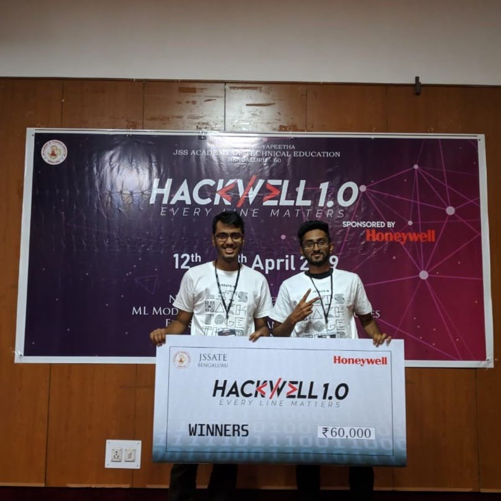
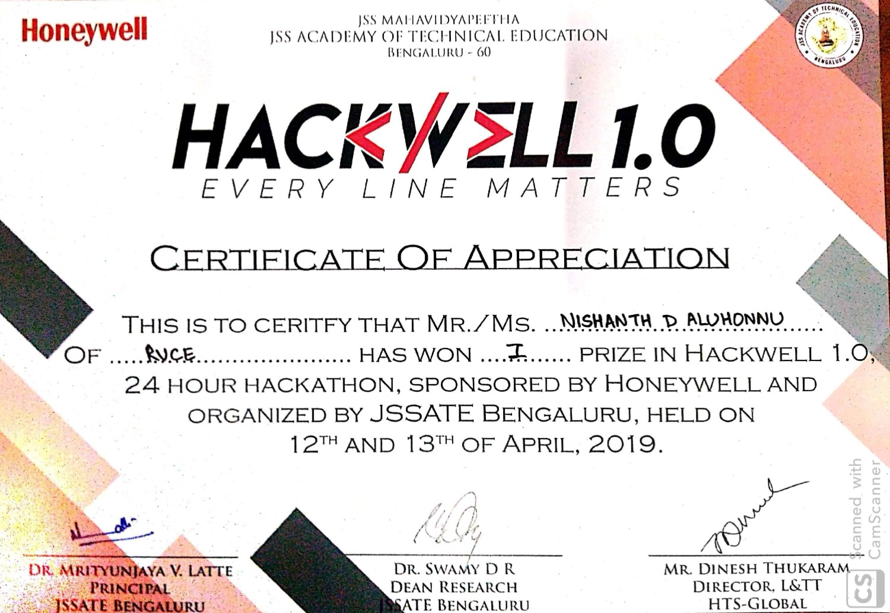

Hackwell 1.0 · JSS Academy of Technical Education, sponsored by Honeywell
Counting who spoke, and when
The third speech problem in five months, and the first one where nobody told us who the speakers were, how many there were, or gave us a single sample to learn them from.
Hackwell 1.0 ran at JSS Academy of Technical Education in Bengaluru over the 12th and 13th of April 2019, twenty-four hours, sponsored end to end by Honeywell. Around 100 teams registered and submitted portfolios; 57 made it to the hack. Rajat Keshri and I went as a pair, as we had at inGenius.
The tagline printed across the banner was Every Line Matters, which in retrospect was optimistic about how much of anyone's code survives a hackathon.
01The problem
Given an audio file with multiple people speaking, work out the number of speaker changes.
That is the entire statement, and it is deceptively small. It is a slice of what the literature calls speaker diarization, the "who spoke when" problem, though a deliberately narrowed slice, and the narrowing is what makes it a good twenty-four-hour problem rather than a research project.
02Counting is not identifying
Worth being precise about what this task does and does not ask for, because the difference is the whole design.
It does not ask who the speakers are. There are no names to attach, no register to check against, no enrolled voiceprints. It does not even tell you how many people are talking. What it asks for is the count of transitions: the number of moments where the person speaking stops being one person and starts being another.
Set against the two problems that came before it, the pattern is obvious in hindsight:
At inGenius in November, the system knew exactly who might speak. There was a register, everybody had enrolled with five samples, and the question was which of a known, closed set of people this voice belonged to.
At SLAC in March, we still had enrolment for the authentication half, though the recognition half had to work offline on a fixed vocabulary.
Here there was nothing. No enrolment, no closed set, no vocabulary. Every piece of prior knowledge the earlier problems handed us had been taken away, and what remained was the raw signal and a question about its structure.
Each of the three problems removed one assumption the last one had given us for free. That is a better curriculum than anyone designed on purpose.
What you are left looking for is change, not identity. You do not need to know whose voice this is; you need to notice that the voice has stopped being the same voice. That is a fundamentally different question, and it is answerable without ever learning a single speaker.

03What is not recorded
How we actually did it, is the honest answer.
There is no repository for Hackwell. No notebook, no scripts, nothing pushed to GitHub before or after. The only contemporaneous record is a paragraph I typed into a document that December, and it describes the problem rather than the solution. The certificate confirms the placing and the date, and that is where the evidence stops.
I could tell you what we probably reached for, and it would be a reasonable guess, and it would still be a guess dressed up as a memory. So the method goes unrecorded. Of the three speech projects, this is the one that won the most and left the least.
Two of the eight things in this archive have no surviving code at all. Both of them won. The correlation is not causal: it is just that in 2019 I pushed a repository when the project had one, and a twenty-four-hour build on a borrowed laptop often did not.
04Result
First place, and ₹60,000, the largest prize of the eight. Second place took ₹40,000, and the pool went deeper still, with a runner-up prize and two consolation prizes behind that.

Five months, three problems, one on-stage photo each, and a steadily decreasing amount of information handed to us at the start. The next one was not about speech at all.